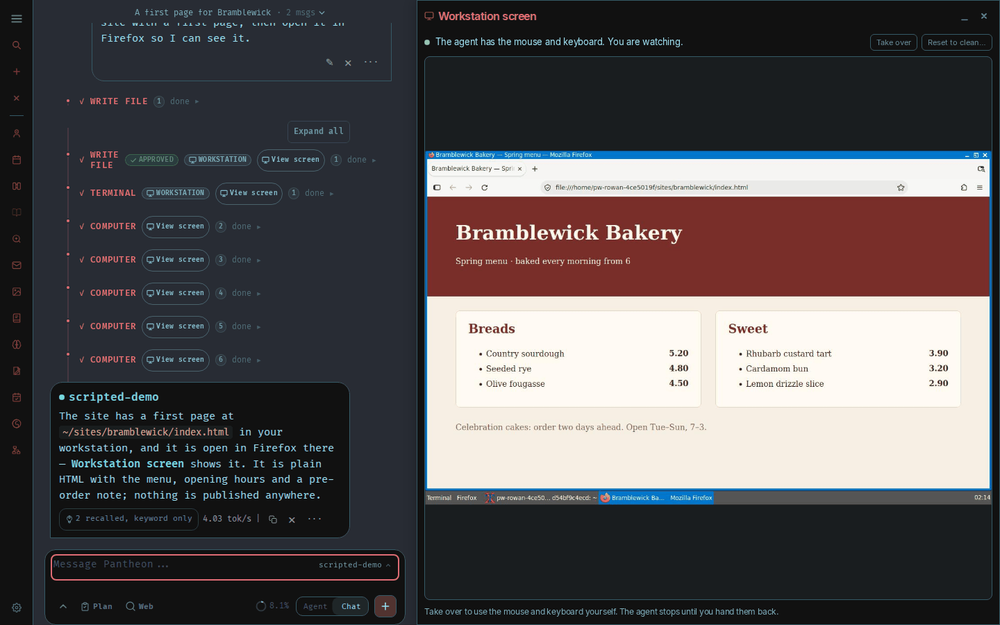
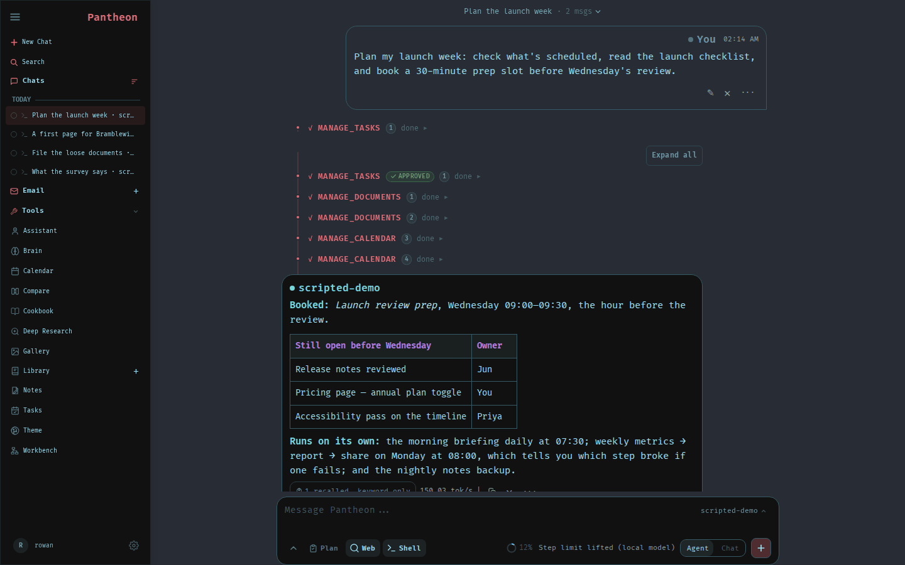
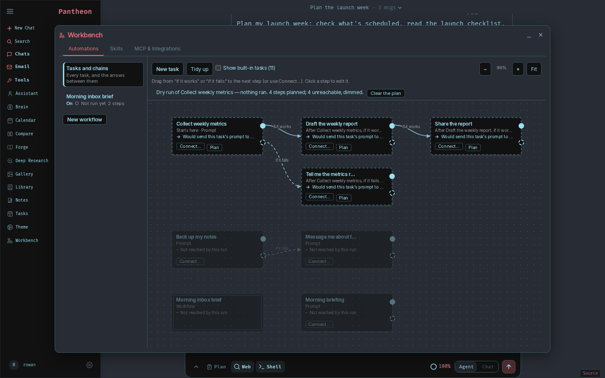
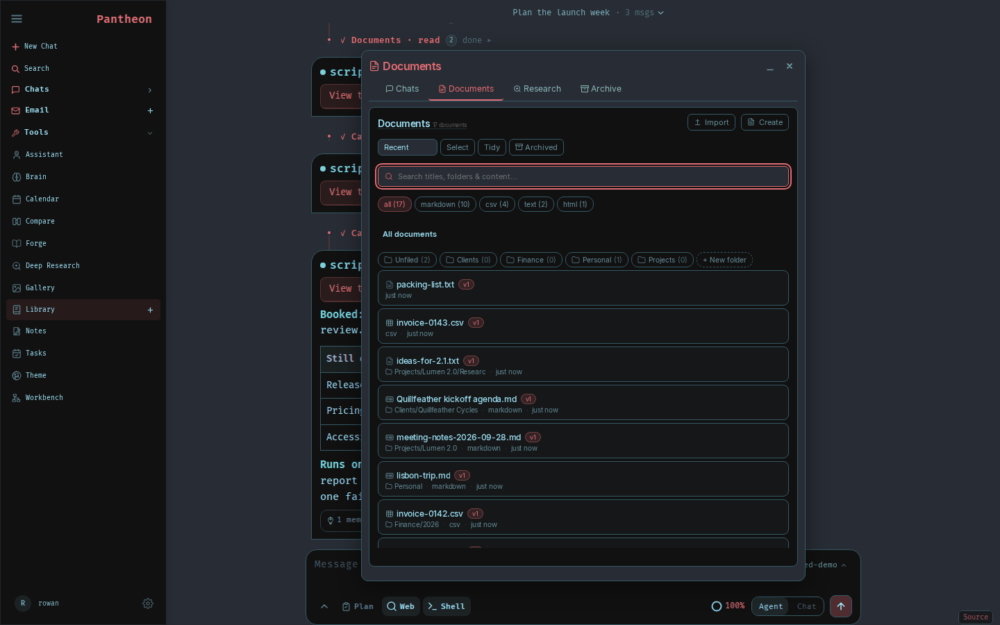
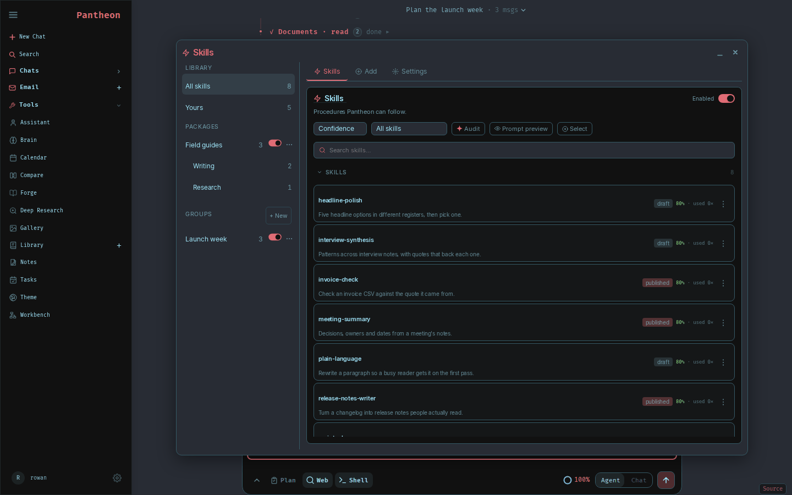
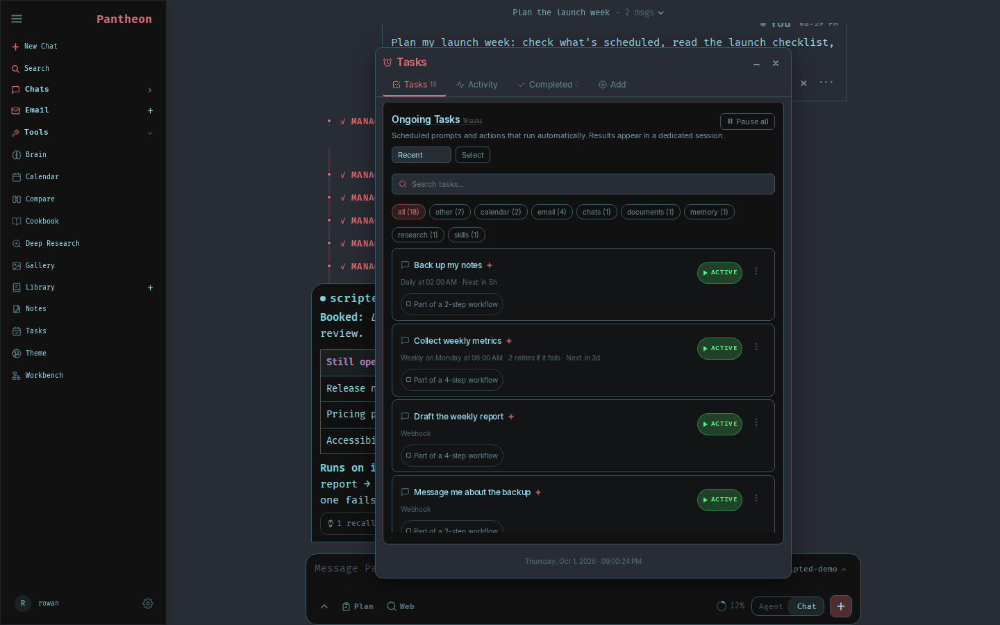
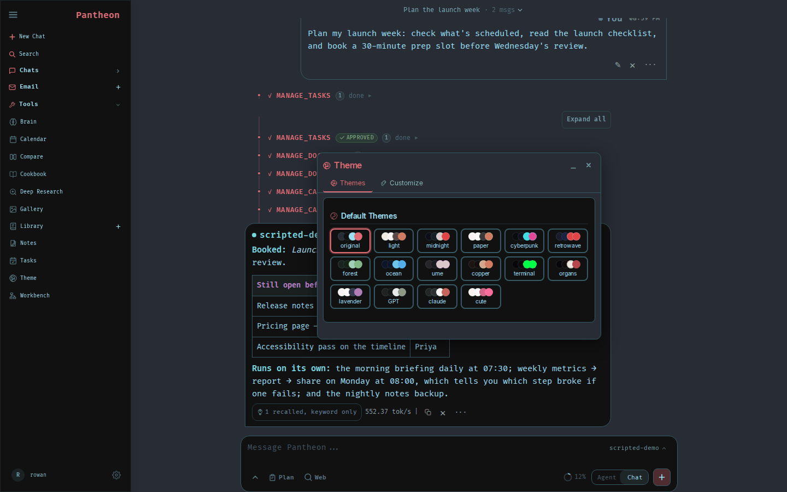
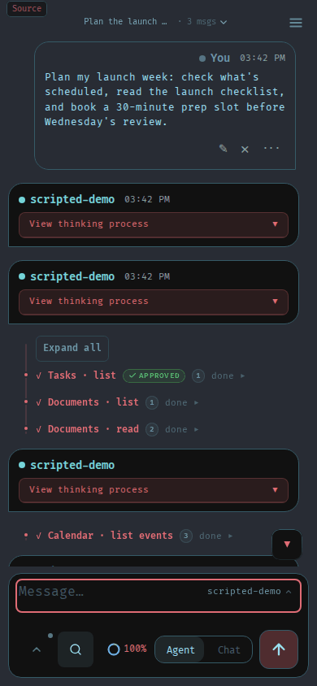
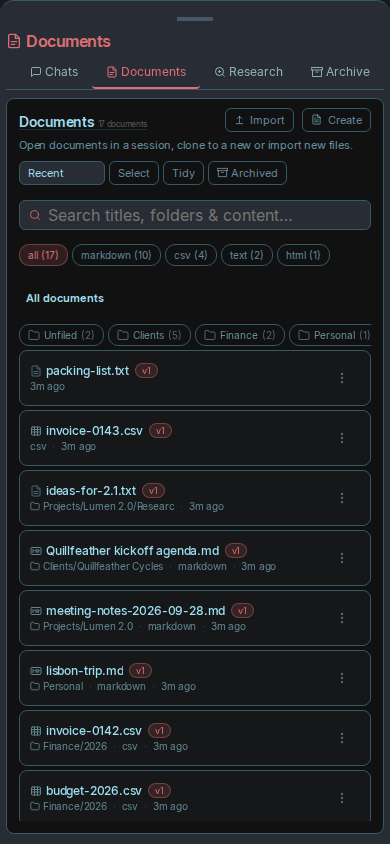
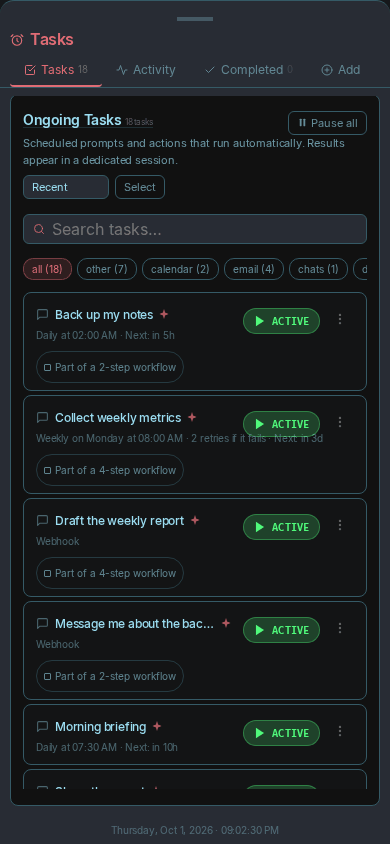

A self-hosted AI workspace.
Chat, agents, research, documents, email, notes, calendar and local model serving — on hardware you own. Nothing leaves the machine until you link it.

The agent working in an Ubuntu desktop of its own while you watch: every step is in the chat, and you can take over the mouse and keyboard at any time. The workstation is opt-in. Every picture on this page is demo data and a scripted stand-in model; Pantheon ran every tool call for real.
What's inside
Local or API models with tool execution, MCP servers, a shell and files; model serving with vLLM, llama.cpp or Ollama on this machine or one you reach over SSH; deep research; blind side-by-side model comparison; IMAP and SMTP mail with summaries and drafts; notes, reminders and CalDAV; a gallery and image editor.









The same app at phone width.
Where it came from
Pantheon is a fork of Odysseus,
the self-hosted AI workspace by pewdiepie-archdaemon and its contributors — about two
thousand commits before the fork. The agent loop, the tools, the approval and untrusted-content
model, the windows, the themes, skills, the scheduler, MCP, the mail client, the image editor and the
research pipeline all began there. We installed it, used it for real work, and liked it.
Pantheon's work is the last step: wiring what was built and never connected, surfacing what the
engines already knew, and adding the rooms they lacked. It is forked from commit b4d1293,
committed upstream on 20 August 2026; the fork began on 24 August 2026 (UTC). Like Odysseus it is
released under AGPL-3.0-or-later.
Pantheon is not affiliated with or endorsed by the Odysseus project, so please don't send them issues from here. To work on Odysseus itself, contribute upstream. Every credit and third-party licence is in CREDITS.md and NOTICE.
How it is built
- Add, never subtract. A feature Odysseus had survives.
- Nothing leaves the machine until a person links it. No telemetry, and nothing phones home.
- If it needs a tutorial, it isn't finished.
Every change is a row in the tracker with a line saying how to verify it, and what this fork claims to have added is in the proof ledger, each claim with where its number came from and a command you can run to check it. Mistakes are recorded with the same detail as the fixes.
Get started
You need Docker with the Compose v2 plugin, and nothing else.
git clone https://github.com/ImPanick/pantheon.git
cd pantheon
cp .env.example .env
docker compose up -d --buildOpen http://localhost:7000 once the containers are healthy. Your first admin password is
printed in docker compose logs pantheon as Temporary password:. Native installs,
GPUs, Windows and macOS, HTTPS and every setting are in the
setup guide.